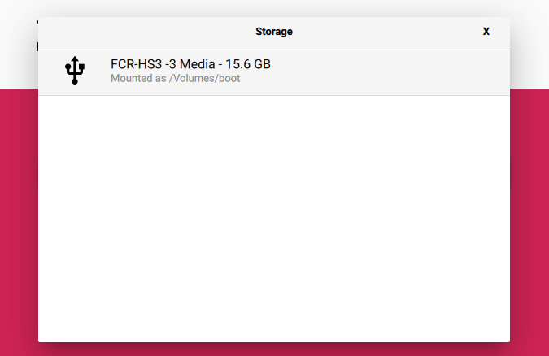
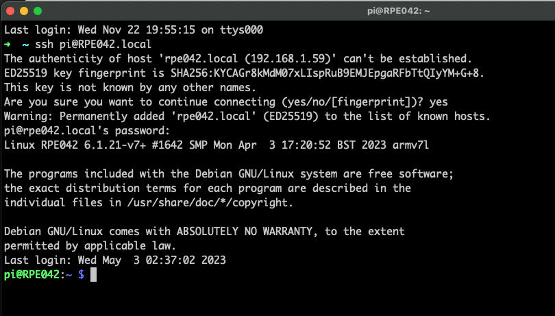
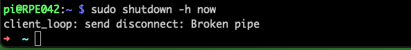

Objectives
In this Exercise you will learn how to prepare the Raspbery Pi with a SenseHAT.
In this task, you will download Raspberry Pi OS from raspberry.org and install it on an SD Card. Further install a load test package and configure Node-RED to automatically start on boot.
Note
If you already have a Pi with a SenseHat running with the latest OS version then jump to step 4.
1. Download and install Raspberry Pi OS on an SD Card
a. Go to https://www.raspberrypi.com/software/ and download the Raspberry Pi Imager:
Tip
For IBM’ers: Either you need to follow the Portable Storage Approval Process to get an exception so you can write to your IBM machine USB port https://ciso-approvals.w3bmix.ibm.com/portable-storage-home.html or you’ll need to find a non-IBM machine to perform this task.
b. Install and start the Rapberry Pi Imager:

c. Chose the Raspberry Pi Device type:

d. Choose the Recommended OS:
e. Choose Storage and select the SD Card in your laptop that you want to write to: 
f. Click Next:
g. You might want to select Edit Settings, which will be easier and will skip step 2/3 later in this exercise – at least the username and password:

h. Click on Save and Yes. Click on Yes to overwrite the SD card and wait until the verification has finished.:
i. Once the SD card is ready you need to do some additional steps before inserting it into the Raspberry Pi. First copy over the following files to a local place on your laptop:
an empty SSH file, wpa_supplicant.conf and the config.txt:

Tip
You can prepare the wpa_supplicant.conf file with your WiFi credentials, by following the instructions here: https://www.raspberrypi.org/documentation/configuration/wireless/headless.md
The ssh file is empty.
j. Add your WiFi credentials to the wpa_supplicant.conf file. You might also want to change the country code if you do not live in the US.
k. Eject and re-insert the SD Card in the reader.
l. Copy the 3 files to the bootfs location:

m. Eject the SD card from the reader.
2. Get the Raspberry Pi up and running using the Raspberry Pi OS desktop
a. Insert the micro SD card into the Raspberry Pi.
b. Connect it to a monitor and keyboard/mouse.
c. Power on the Pi and verify: - the WiFi is working - you have defined the right hostname (Terminal: hostname) - use Raspberry Pi Configuration tool to verify Interfaces are enabled (SSH and optionally VNC), Localisation and WLAN Country
– OR -
3. Get the Raspberry Pi up and running headless using the terminal
a. Insert the micro SD card into the Raspberry Pi and power it up. You know it is up and running when the SenseHat have turned off the LEDs and the Raspberry Pi green LED is blinking slowly.
b. Open a terminal windows and ssh into the Pi:
ssh pi@RPE042.local
answer yes enter the default password: raspberry (or the password you changed in step 1g) 
c. [If not done already] The first thing you need to do is changing the default password using:
passwd

d. [If not done already] Then change the hostname (raspberry) to the instance of your RPE defined in task 1, e.g. RPE042. This needs to be changed in two files:
sudo nano /etc/hostname
sudo nano /etc/hosts
Tip
Control-o to save the file, followed by Control-x to exit from the nano editor.
e. [If not done already] Change the localisation of your pi.
sudo raspi-config
select the following menu item: 5 Localisation Options
and define your selections in all 4 submenus

f. [Optional] You might want to enable VNC under 3 Interface Options
g. Finish raspi-config
h. Reboot the Pi:
sudo reboot now
wait a while until the Raspberry green LED have had some longer ON’s and then revert back to a few blinks once in a while.
i. SSH into the Pi again. Remember to use the new hostname and password:

4. Update and upgrade the Pi
Update and upgrade the Pi by using the following commands:
sudo apt update
sudo apt full-upgrade
get a cup of coffee or tea, as this might take a while.
5. A few additional steps
When the Pi is up and running you only need a few additional steps that are a pre-req for the RPE Node-RED flows to work.
a. SSH into the Pi if not already done so.
b. Install Node-RED following the steps described here: https://nodered.org/docs/getting-started/raspberrypi However, it is advisable to add “--node20” to install Node-js V20 at the end of the install command:
bash <(curl -sL https://raw.githubusercontent.com/node-red/linux-installers/master/deb/update-nodejs-and-nodered) --node20
Answer y to both questions and the installation will start.
Press Enter to create the settings file.
Enter your Username and Password.
Press Enter to select default settings, until the settings file has been written.
c. Set the Pi to autostart Node-RED at every boot:
sudo systemctl enable nodered.service
d. Install the sysbench package, which will be used to add load to the RPE at regular intervals:
sudo apt install sysbench
Tip
Installing sysbench on the RPE is an IMPORTANT step to create load on the system regularly.
e. Fetch the IP address of the RPE as you will use that later when using Node-RED:
hostname -I
 (Showing both IP v4 and v6 addresses)
(Showing both IP v4 and v6 addresses)
f. Shutdown the RPE:
sudo shutdown -h now

Tip
Power off once the green LED stopped blinking.
NOW is a good time to backup you SD card to e.g. <date>-Fresh Image.img
g. This concludes this exercise.